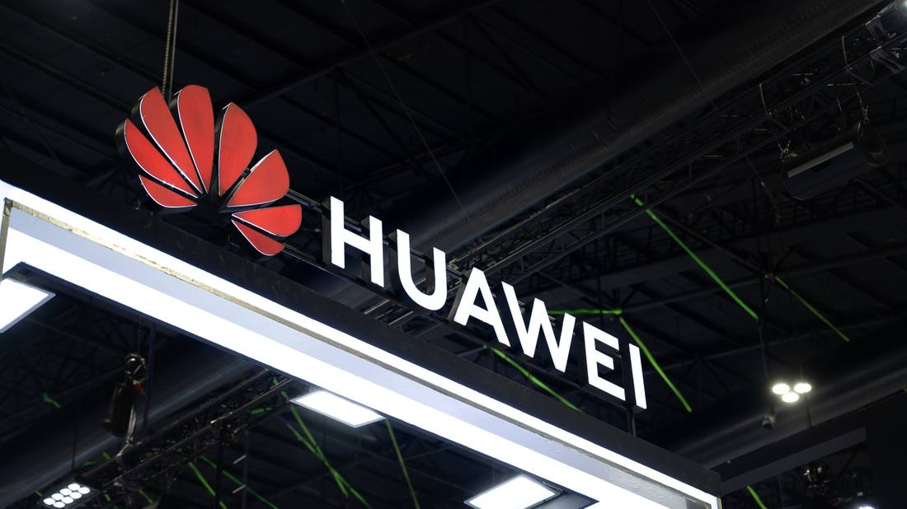

US Jury Convicts Huawei of Trade-Secret Theft, Fraud and Sanctions Violations
A federal jury in Brooklyn convicted Huawei Technologies and three subsidiaries on November 24, 2026, on 10 of 12 criminal counts, including conspiracy to steal trade secrets, bank fraud, wire fraud, sanctions violations and money laundering conspiracy, acquitting them of racketeering conspiracy and conspiracy to obstruct justice. Prosecutors proved thefts including T-Mobile's Tappy testing robot and Cisco router source code, and a years-long deception over Huawei's Iran business run through the Skycom front. Sentencing is set for September 14, 2027, and Huawei says it will appeal.

- 01THE VERDICT — November 24, 2026: A federal jury in the Eastern District of New York convicts Huawei Technologies and three subsidiaries on 10 of 12 counts, including conspiracy to steal trade secrets, bank and wire fraud, sanctions violations and money laundering conspiracy.
- 02THE EVIDENCE — Prosecutors proved a pattern of thefts: T-Mobile's Tappy robot, Cisco router source code, Quintel antenna technology and CNEX hardware access, alongside a years-long deception over Huawei's Iran business run through the Skycom front.
- 03THE ACQUITTALS — The jury acquits Huawei of racketeering conspiracy and conspiracy to obstruct justice, the two charges prosecutors framed as the most serious. Huawei's lawyer says the company will appeal.
WHAT HAPPENEDWhat Happened
A federal jury in Brooklyn convicted Huawei Technologies and three of its subsidiaries on November 24, 2026, of conspiracy to steal trade secrets, bank fraud, wire fraud, sanctions violations and money laundering conspiracy, after a trial lasting about three months. The jury found the companies guilty on 10 of the 12 counts they faced, acquitting them of racketeering conspiracy and conspiracy to obstruct justice. Sentencing is set for September 14, 2027, when the defendants face criminal fines, forfeiture and restitution.
The trade-secret counts were the centerpiece. Prosecutors showed Huawei stole proprietary information about T-Mobile's Tappy robot, which tests touchscreens by mimicking a human touch, after signing a non-disclosure agreement it intended to break. Huawei employees sent photographs and technical details back to China, and one employee carried a part of the robot out of T-Mobile's laboratory in a backpack. Huawei also copied source code for Cisco routers, which the Justice Department called the crown jewel of Cisco technology, and took antenna technology from Quintel and hardware access from CNEX through a hired university researcher.
The sanctions counts covered Huawei's business in Iran, run under the front name Skycom. The Justice Department said Huawei lied to banks, journalists and the U.S. government about its work in Iran, including claims that it had begun restricting the business in 2011 and that Skycom was a business partner rather than a wholly owned subsidiary. Prosecutors said the lies won Huawei billions of dollars and access to U.S.-dollar clearing services, and that Huawei helped Iran's government monitor and censor internet users and supplied surveillance cameras used to watch protest activity.
Huawei's lawyer said the company would appeal the convictions while welcoming the acquittals on the two most serious charges. The verdict arrived days after a summit in Shenzhen, Huawei's home city, between President Donald Trump, China's Xi Jinping and Russia's Vladimir Putin, and it closes a case that began with a 2018 indictment and new charges added in 2020.
WHY IT MATTERSA verdict on two decades of alleged theft, not a single incident.
The case was built as a pattern, not a single theft. Prosecutors called more than 60 witnesses over two to three months and presented a list that ran from T-Mobile's robot to Cisco's router code, Quintel's antenna work, a CNEX circuit board and a Fujitsu employee photographed with a false badge. The jury's guilty verdicts on the trade-secret conspiracy count turn a set of long-disputed corporate-espionage claims into a criminal finding.
The sanctions counts matter as much as the theft counts. The verdict says Huawei's Iran business was not a compliance failure but a deception maintained for years, with banks misled about billions of dollars in transactions. That finding lands while U.S. export controls on advanced technology remain the central lever in the U.S.-China technology contest, and it gives Washington a court-tested record to point to.
THE CAVEATTwo acquittals and an appeal leave the story open.
The jury rejected the two charges prosecutors framed as the most serious: racketeering conspiracy, which would have cast Huawei as a criminal enterprise, and conspiracy to obstruct justice. Huawei's defense argued throughout that the government was criminalizing ordinary business competition, and its lawyer said the company would appeal. A conviction is not the end of this case.
The practical consequences are also still to be set. Sentencing is nearly ten months away, in September 2027, and the judge will decide fines, forfeiture and restitution then. Huawei remains one of China's largest technology companies, and the verdict does not by itself change its access to markets or technology beyond the existing U.S. restrictions.
THE SHIFTWhat Changed
SIGNAL JUDGMENT — ANALYSISA criminal finding on the trade-secret claims, with the penalties still to come.
This verdict converts two decades of corporate-espionage allegations against Huawei into a criminal conviction, and the sanctions counts make it a broader judgment on how the company did business, not just what it took. The acquittals on racketeering and obstruction matter too: the jury drew a line between a pattern of theft and fraud and the claim that Huawei operated as a criminal enterprise. The appeal and the September 2027 sentencing are the next steps to watch, and the practical effect will be measured in fines and in how the verdict is used in the wider U.S.-China technology contest.
WHAT REMAINS UNCERTAINWhat Remains Uncertain
EVIDENCEEvidence
A federal jury in Brooklyn convicted Huawei and three subsidiaries on November 24, 2026, on 10 of 12 counts including conspiracy to steal trade secrets, bank and wire fraud, sanctions violations and money laundering conspiracy, acquitting them of racketeering conspiracy and conspiracy to obstruct justice.
PRIMARY SOURCESPrimary Sources
- U.S. Department of Justice: Chinese Tech Giant Huawei and Subsidiaries Convicted of Sanctions Violations, Fraud, Conspiracy to Steal Trade Secrets, and Money Laundering
https://www.justice.gov/opa/pr/chinese-tech-giant-huawei-and-subsidiaries-convicted-sanctions-violations-fraud-conspiracy - Reuters: China's Huawei convicted in US in sprawling criminal trial over Iran business
https://www.reuters.com/legal/litigation/chinas-huawei-convicted-us-criminal-trial-stemming-iran-business-2026-11-24/ - The Wall Street Journal: China's Huawei Convicted of Fraud in U.S. Criminal Trial
https://www.wsj.com/business/telecom/chinas-huawei-convicted-of-fraud-in-u-s-criminal-trial-20e17ac3 - Engadget: Huawei is guilty of conspiracy to steal trade secrets, US jury rules
https://www.engadget.com/2327450/huawei-is-guilty-of-conspiracy-to-steal-trade-secrets-us-jury-rules/
RELATEDRelated Intelligence
- China Telecom Open-Sources Xing4.1-Preview, a 285B Model Trained Without Nvidia Hardware
- Nvidia's Billion-Dollar China Turnaround Is Threatened as Customers Cancel Orders After Huang's Exit
- Bessent: Nvidia Still Has Not Answered on China Chip Sales, Seven Days Into 10-Day Deadline
- European Commission Confirms AI-Assisted Cyberattack Disrupted Its Systems for Over Ten Days